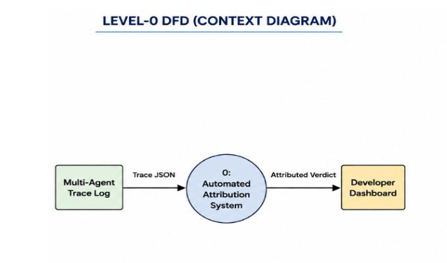

↳ Deep dive · Stage 01 of 05 · Report §4.1 Alg. 1 · FR-02
Every framework logs differently — AutoGen JSON, LangGraph and CrewAI dicts, MetaGPT schemas, raw console dumps. The TraceSegmenter normalizes all of it into one domain entity, the ExecutionStep, and guarantees no step ever exceeds the judge's 4,096-token context window.
↳ What it does
Parsing is format-aware; budgeting is format-blind — every step gets the same ceiling.

↳ How it works
A 30,000-token turn cannot be judged. The 60/30 slice keeps what matters and drops the mushy middle.
parse_custom_json() handles framework schemas; parse_raw_log_text() recovers agent turns from raw console text with a task goal attached.
Agent name, recipient, action payload, input context, output state — chronological, persistent agent names assumed (report §3, Assumptions).
_bound_token_length() slices oversized payloads to 60% head + 30% tail, so the StepJudge prompt always fits Qwen's window.
# TraceSegmenter(max_turn_tokens=4096) steps = segment_trace(trace) # → List[ExecutionStep] for s in steps: s.payload = _bound_token_length(s.payload) # keep first 60% (instructions) + last 30% (exceptions) guarantee: every downstream prompt ≤ 4,096 tokens
Hard cap enforced before any LLM call (FR-02, NFR).
Task instructions and goal survive truncation.
Terminal exception traces survive truncation.
AutoGen · LangGraph · CrewAI · MetaGPT · raw logs.